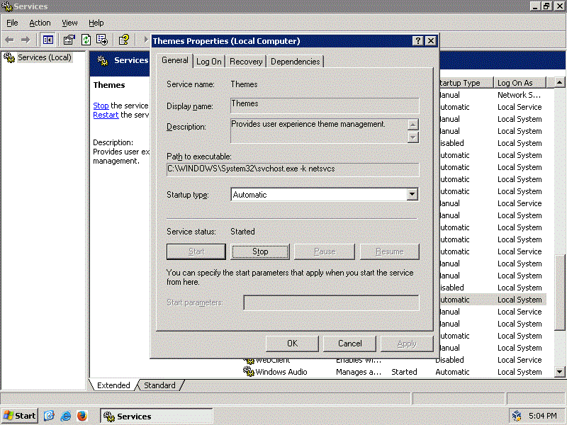
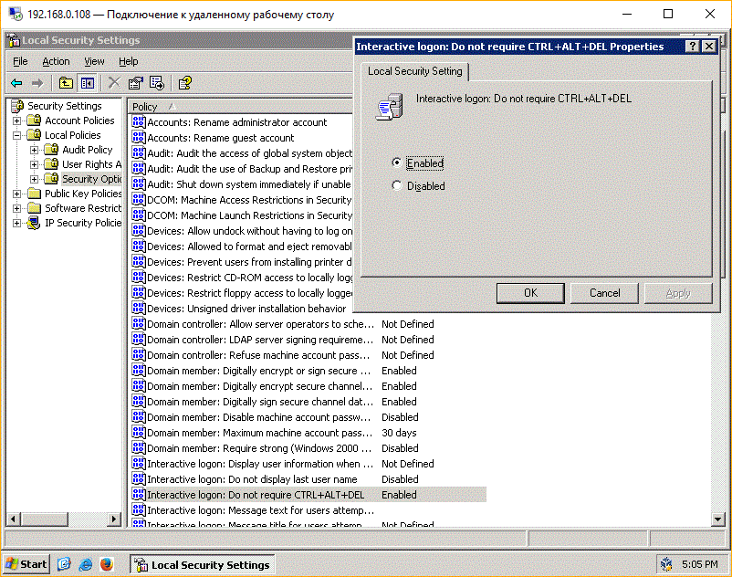
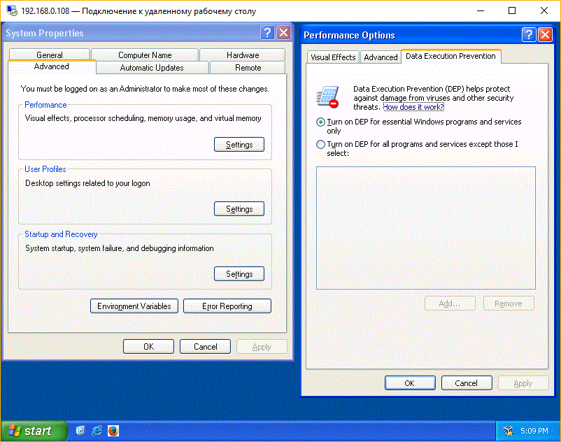
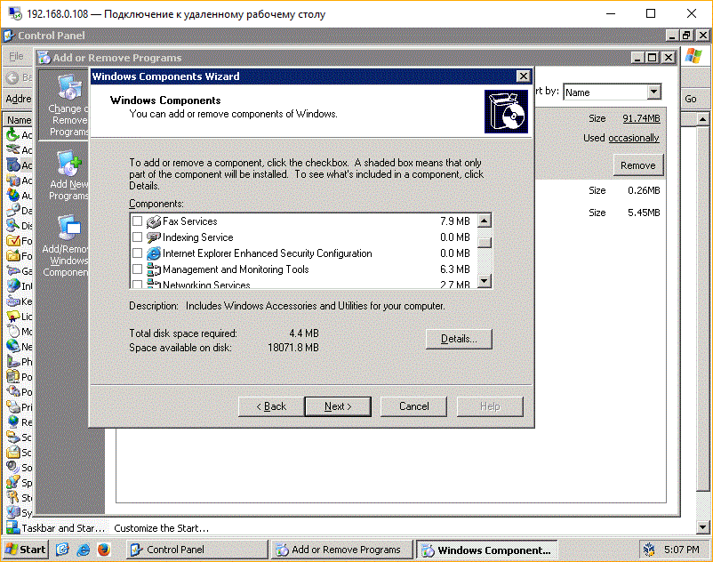

Go back
It might seem stupid to use Windows Server for workstation use,
but in my opinion there are good uses for it, such include:
1. Performance
2. Less bloated
3. You can use any server features when they will be needed
If this was enough for you to try to do so. I can help you with it using this page right here
Notes
1. If you are using a Wi-Fi card, you need to enable Wireless LAN Service for your Wi-Fi card to work
2. Instructions might differ depending on which version of Windows Server you are using,
these differences will be noted in the article so you shouldn't worry about those differences
3. In Windows Server 2008, Microsoft added Core SKU. It lacks explorer.exe and similar features,
if you came to Windows Server to have such features, you should pick non-core SKU
Installation
Installation should be very easy. Since there are no differences between Client Windows installer and Server Windows installer.
Most parts of OOBE are skipped though. In Windows Server it's usually only password and nothing else
Themes
This step is not needed for Windows Server 2016 or newer
After installation and logging in to the desktop, you might have noticed that theme is
either Classic Theme or Aero Lite Theme, there are a lot of people who like
those themes. But it's not for everyone so you might like to get default Client Windows
theme
Step 1. Enable Themes service
To enable Themes service you need to open Run prompt and type services.msc,
after that you will see a window open, in it you have to find a service called Themes
(it might be translated to your native language if you haven't chosen English). After
finding it, you have to change from service being disabled to start automatically, and
then start the service. Now if you are using Windows Server 2003 you can go to Themes
or Appearance and change it to Luna theme. However if you are using newer versions,
you have to continue with this guide

Step 2. Enable Desktop Experience (not needed for Windows Server 2003)
Do you remember Server Manager that opened before. Well here it comes for
our needs. First, click on Add Features
(Note: in Windows Server 2012 it's called Add Features and Roles, after it asks for
role to add, you just press Next without choosing anything), after doing it. You choose
Desktop Experience, agree with adding anything that it asks for. After this you press
next, after your computer restarts you can use Aero or Aero Basic theme, currently while
it's installing, we can continue with next sections of this guide
Disabling requirement for CTRL-ALT-DEL and password restrictions
You might have noticed that Windows Server requires pressing CTRL-ALT-DEL to logon,
plus password requirements are pretty strict,
this might not be what you like, and thankfully it can be disabled. To disable it.
First open Control Panel, then Administrative Tools, and double click on
Local Security Policy. next, go to Local policies, then Security options,
then after looking through everything inside it, you will find Do not require
CTRL-ALT-DEL option. You have to enable this option, continuing with this program.
We go back and find user account policies, then inside it we find password policy,
and right there you can remove password restrictions and make password never expire.

Disabling Shutdown Event Tracker
If you had to shutdown or restart already, you have noticed that unlike normal Windows, you have to
specify a reason to shutdown or restart. This can be explained for servers, but for
clients this is pretty annoying. To fix this we run Run prompt again, but now
instead of services.msc, we type gpedit.msc. Then we go to Computer
configuration - Administrative templates - System, then there we find Display
Shutdown Event Tracker, we change the option from Not configured, to Disabled
Performance and DEP
Now in Performance tab, for getting the most client Windows look I recommend
you to change Performance settings to ones for best appearance. In advanced, we
change optimizations from Background applications to Programs, after that we go to 3rd
section which should be DEP. In there we change from DEP being used everywhere to
only for default Windows programs. This will require a restart, if you completed
everything needed before this, you can restart

Disabling IE ESC
We are pretty much done with this guide. However, if you tried to use Internet Explorer,
likely to download a better browser))), a thing called Internet Explorer Enhanced Security
is basically being a pain. To disable it, you go to Server Manager and find IE ESC
and change from being on for administrators and users, to off for administrators and users

The method I wrote above this image only works on Server 2008 or later, this images shows a way to do it on Server 2003 (R2)
I think this is enough for a guide, I might add new steps later if I think they would be
needed